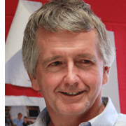
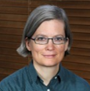

SCHEDULE
VIRTUAL LOCATION
Zoom (participants will receive a link after registration).
PHYSICAL LOCATION
Nancy Marcus Great Hall inside the Honors, Scholars, and Fellows (HSF) House. Breakout rooms are held in other rooms at HSF.
1:00 EST
Welcome

Dr. Jim Clark
Provost and Executive Vice President for Academic Affairs, Florida State University.
1:05 EST
Introduction: Going from Postdoc to Academic and Non-Academic Jobs

Dr. Chris Smith
Postdoctoral Affairs Program Administrator, Virginia Tech.
Ph.D., Neurobiology.
Ph.D., Neurobiology.
Academic
1:20 EST
How to Succeed in Academia

Dr. Kenneth Hanson
Associate Professor, Department of Chemistry & Biochemistry, Florida State University.
Ph.D., Chemistry.
Ph.D., Chemistry.
1:50 EST
Panel Discussion

Dr. Francesca Bernardi
Assistant Professor, Department of Mathematical Sciences, Worcester Polytechnic Institute.
Ph.D., Mathematics.
Ph.D., Mathematics.

Dr. Erminia Fardone
Assistant Scientist, Miller School of Medicine, University of Miami.
Ph.D., Neurobiology and Life Sciences.
Ph.D., Neurobiology and Life Sciences.

Dr. William Dewar
Pierre Welander Professor, Department of Earth, Ocean, and Atmospheric Science, Florida State University.
Ph.D., Physical Oceanography.
Ph.D., Physical Oceanography.
Dr. Trelani Chapman
Assistant Professor, Communication Sciences and Disorders, University of Alberta Edmonton.
Ph.D., Speech-Language Pathology.
Ph.D., Speech-Language Pathology.
2:20 EST
Breakout Rooms
GO TO
- Zoom Room 1 / HSF Great Hall for Francesca Bernardi
- Zoom Room 2 / HSF Room 2009 for Erminia Fardone
- Zoom Room 3 / HSF Room 3008 for William Dewar
- Zoom Room 4 / HSF Room 3009 for Trelani Chapman
2:50 EST
Break
Non‑academic
3:00 EST
How to Transition to Non-Academic Jobs
Dr. Tracy Costello
Director, Postdoctoral Affairs and Graduate Student Development, University of South Florida.
Ph.D., Human and Molecular Genetics.
Ph.D., Human and Molecular Genetics.
3:30 EST
Panel Discussion

Dr. Nathan Crock
Director, NewSci Labs; Affiliate Faculty in Scientific Computing, Florida State University.
Ph.D., Computation Science.
Ph.D., Computation Science.

Dr. Anne Krook
Career Coach. Founder and Principal, Practical Workplace Advice.
Ph.D., English Language and Literature.
Ph.D., English Language and Literature.

Dr. Troy Lowry
Research Analyst, Institute for Defense Analyses, Alexandria-VA.
Ph.D., Physics.
Ph.D., Physics.
Dr. Tracy Costello
Director, Postdoctoral Affairs and Graduate Student Development, University of South Florida.
Ph.D., Human and Molecular Genetics.
Ph.D., Human and Molecular Genetics.
4:00 EST
Breakout Rooms
GO TO
- Zoom Room 1 / HSF Great Hall for Nathan Crock
- Zoom Room 2 / HSF Room 2009 for Anne Krook
- Zoom Room 3 / HSF Room 3008 for Troy Lowry
- Zoom Room 4 / HSF Room 3009 for Tracy Costello
4:30 EST
Closing
Dr. Debi Fadool
Associate professor, Department of Biological Science, Florida State University.
Ph.D., Neurosciences.
Ph.D., Neurosciences.
5:00 EST
Catered Reception & Dinner
Reserved for speakers and Florida State University postdocs at HSF Great Hall. Vegetarian options included.
Participants are welcome to bring desserts from their home country.
Participants are welcome to bring desserts from their home country.